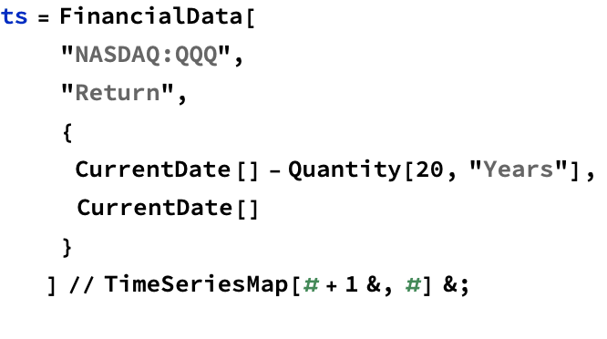
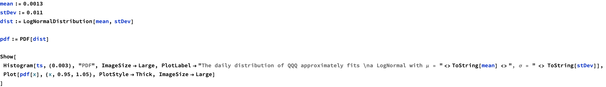
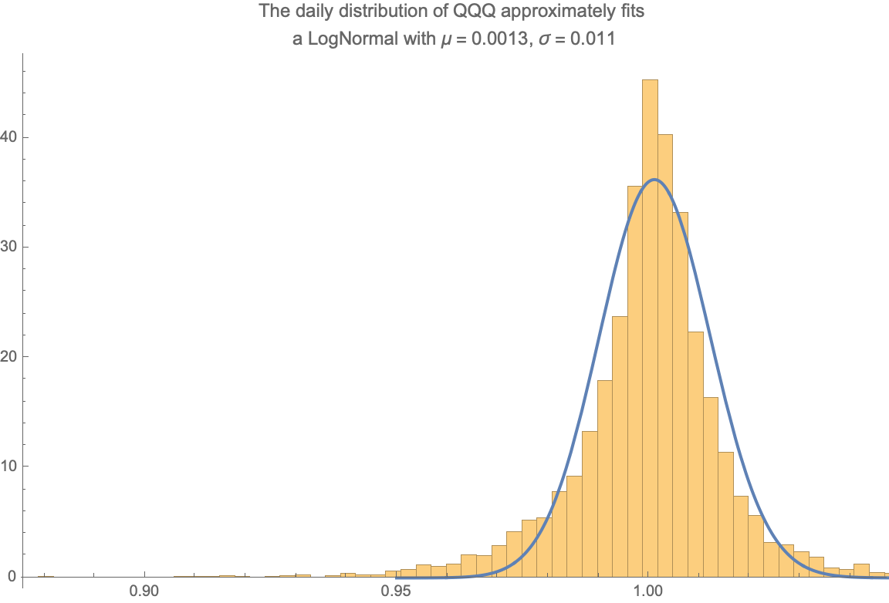
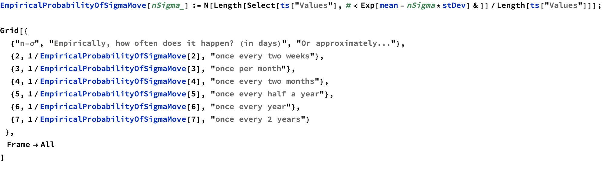

Battle Plan
This document describes the actions we should take in case of a market crash.
Identifying a Crash
The first thing to do is to determine if a crash is even happening. The heuristic we use here is to know how much the market has crashed in terms of standard deviations.
Any drop below 2 standard deviations is no evidence of a crash. A drop of 3 standard deviations is called a 3-σ crash, a drop of 4 standard deviations is called a 4-σ crash, etc.



This gives us a very practical approximation for identifying crashes: since a 1% drop of QQQ is a 1-σ move, then a 3% drop is a 3-σ move.
How often should we expect n-σ moves in the market
By looking at the empirical probabilities, we can get an idea of how often large moves occur in the market. Although there is no guarantee that the future will look like the past, its good to have an idea of these probabilities.

| n-σ | Empirically, how often does it happen? (in days) | Or approximately... |
| 2 | 13.368 | once every two weeks |
| 3 | 32.5519 | once per month |
| 4 | 73.7206 | once every two months |
| 5 | 208.875 | once every half a year |
| 6 | 358.071 | once every year |
| 7 | 626.625 | once every 2 years |